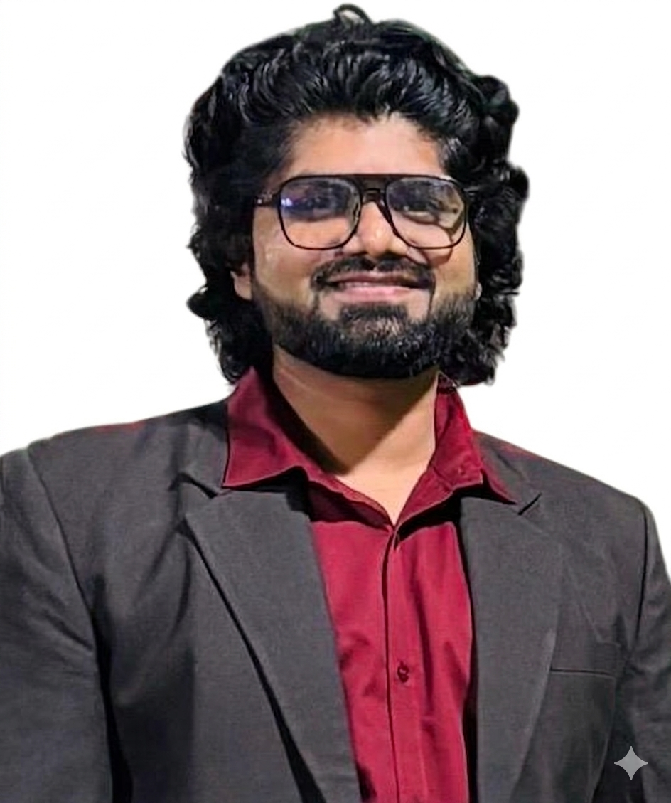

AI/ML Sr. Engineering Manager, GenAI Architect and AI Consultant. 14+ years of engineering leadership, from RAG pipelines at sub-1s latency to agentic workflows in production.
How do you serve millions of documents in under a second?
I build production-grade GenAI systems: RAG pipelines serving millions of docs at sub-1s latency, LangGraph agentic workflows, Azure OpenAI integrations, and multi-agent orchestration.
With 14+ years of engineering leadership across SaaS, InsurTech, AI, and hospitality, I bring both the architectural depth and the delivery discipline your project needs.
Currently leading a 12-member cross-functional team and taking select freelance clients for ambitious AI challenges.
Enterprise-scale RAG pipeline serving millions of documents at sub-1s P95 latency. Hybrid retrieval with re-ranking, citation tracking, and multi-vector search using Azure AI Search + PGVector.
Hybrid semantic search combining dense + sparse vectors with OpenSearch and FAISS. Sub-second retrieval across millions of records with custom re-ranking.
Production conversational AI platform with WebSocket streaming, session management, and context-aware multi-turn dialogue. Integrated with Jio's service automation layer.
Dynavec is a production-grade vector database and retrieval engine. I contributed 12+ features across quantization, hybrid search, RAG integrations, and embedding optimization.
Leading 12-member team · Enterprise RAG · Agentic AI · Conversational AI
InsurTech & SaaS · LLM agents
SaaS & Hospitality · Team scaling · Python & Ruby on Rails · Onsite: 🇮🇩 🇻🇳 🇭🇰 🇹🇭
Sodel Solutions Pvt Ltd
Got a RAG system to architect, an AI agent to ship, or a team that needs GenAI leadership? I've done it at enterprise scale.
Connect on GitHub